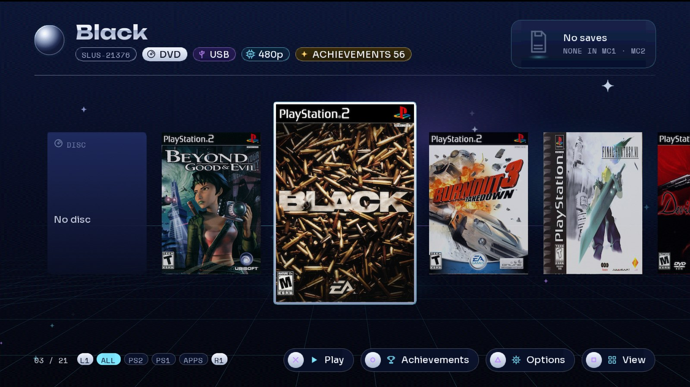
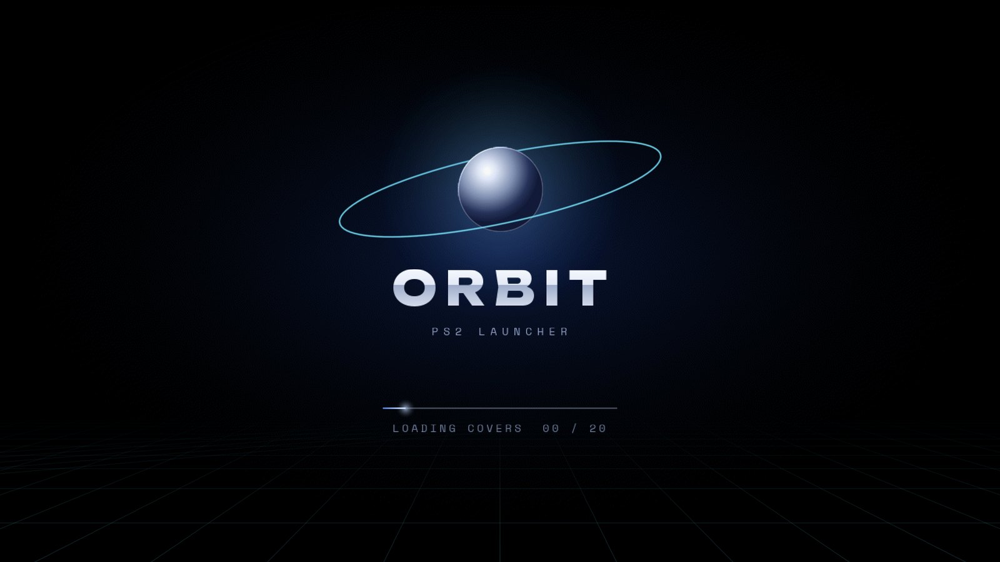
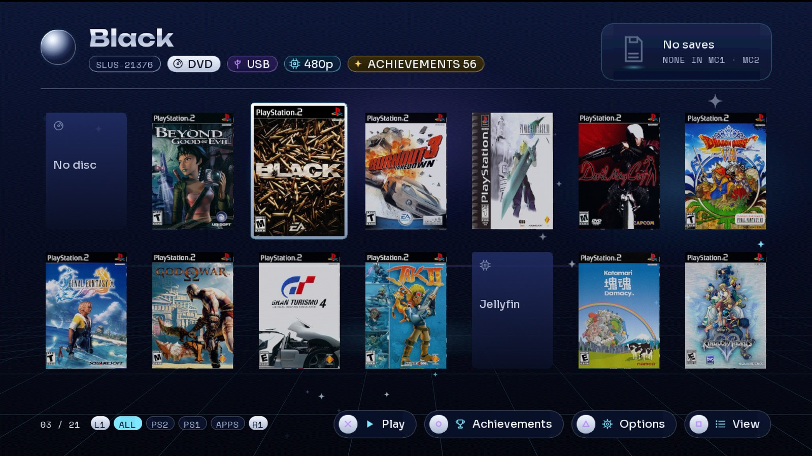
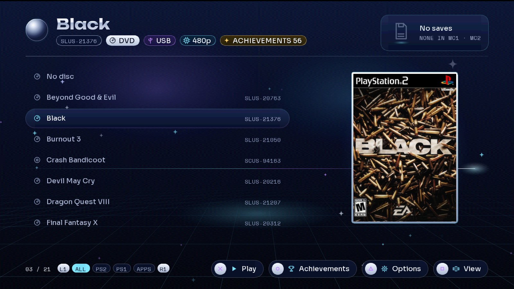
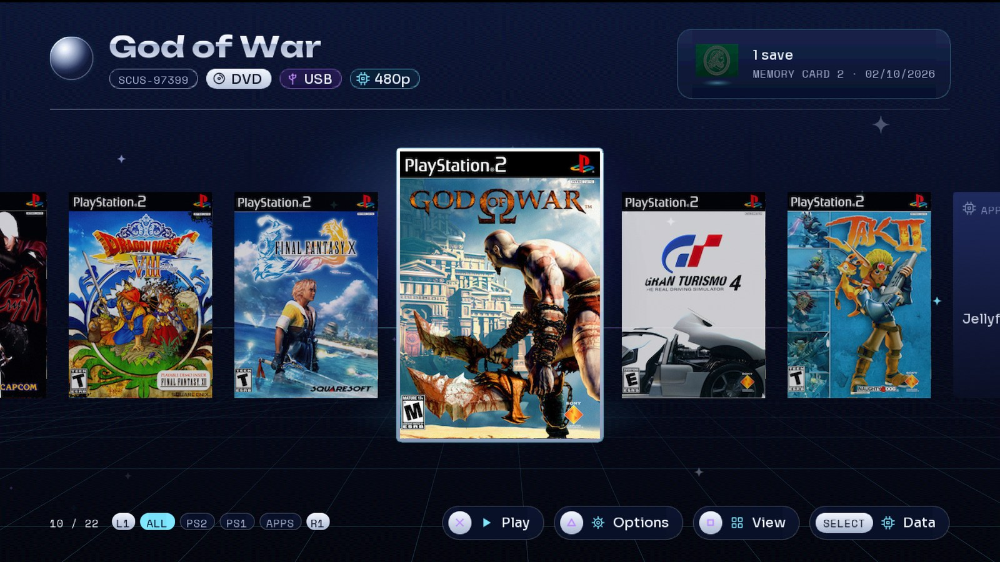
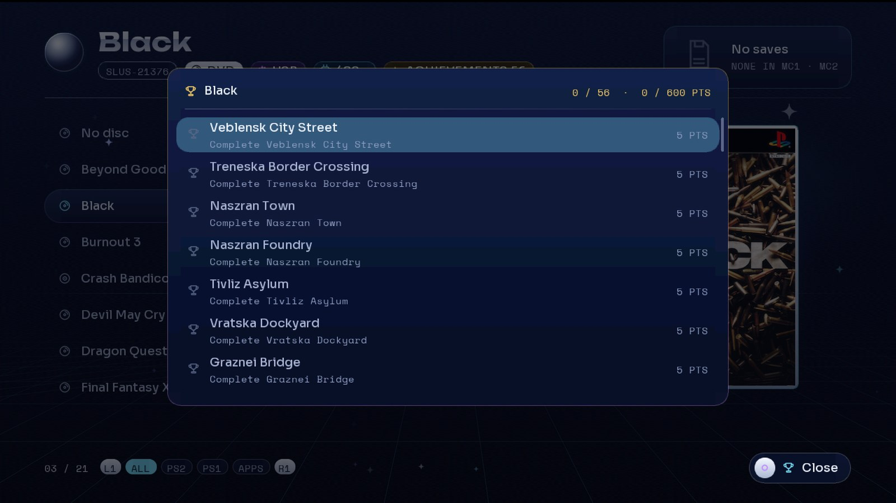
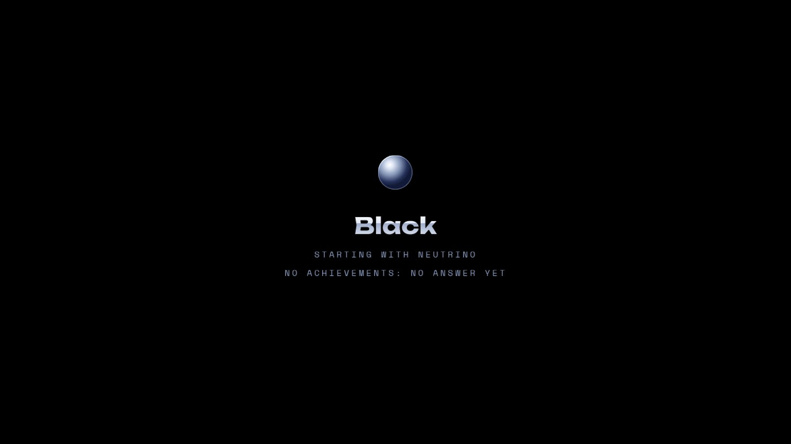

A modern game launcher for a real PlayStation 2. Your library with covers, 3D save icons, an in-game menu, games from a home server, and RetroAchievements — on the console itself.

Everything runs on the PS2. No PC step to prepare covers, no separate tool to make memory cards.
Carousel, grid or list, with filters for All, PS2, PS1 and Apps. A median frame takes under 5 ms of its 16.7 ms budget, measured on a slim PS2.
Missing covers download over HTTPS from xlenore/ps2-covers, are decoded and dithered on the PS2, and saved to the USB.
The newest save of each game is read from the memory card and its 3D icon spins on the game's card.
One card per game (or one shared), created on first play on the game's own device. Or the physical card — your choice per game.
Hold L1+L2+R1+R2+START+SELECT in any game: it pauses and offers restart or power off. Direct combos too.
Each game is identified with the rcheevos hash; ○ lists its achievements and your progress. While you play, an agent inside the game unlocks them on your profile.
Keep your ISOs on a Linux box. They list instantly, load over the network, and keep covers, achievements and save icons.
USB, internal HDD (exFAT or HD Loader), MX4SIO, iLink, MMCE, UDPBD and udpfs — mixed in one list.
Force 480p or 1080i, compatibility modes, which memory card. Remembered per game.
Boots the disc in the drive, PS1 games through POPStarter, and homebrew from APPS/.
One setting changes the menus, the in-game menu and the comments in the config file.
The companion app plays your Jellyfin movies and series on the PS2, with subtitles. orbit-jellyfin
There are good PS2 loaders. ORBIT is about what happens around the game.
Covers, save icons, game details and achievements on one screen, animated at a steady 60 fps on 2000-era hardware.
Drop ISOs in DVD/. The PS2 fetches its own covers, creates its own memory cards and writes its own commented config file.
Until now RetroAchievements on the PS2 meant an emulator. ORBIT's agent runs inside the game on the console.
Games from a home server behave like games on the USB: same covers, same achievements, same per-game cards.
The in-game menu and the restart combo bring you back to ORBIT without touching the console's reset button.
GPL-3.0. Every phase has its spec and its results measured on the console in the repository.
Captured from the launcher itself. Click to enlarge.






The trailer, and a complete setup guide on a real PS2.
One zip with everything for the USB drive, plus the optional game server.
launcher.elf, Neutrino with ORBIT's in-game menu and achievements agent, folders, quick start.
Optional, for achievements: runs on a PC or server at home. Use v0.1.0-alpha.9, the version ORBIT is tested with.
Three steps. You need a PS2 that runs homebrew (FreeMcBoot or similar) and a USB drive.
launcher.elf, neutrino/, DVD/, CD/. Put your PS2 ISOs in DVD/ (CD games in CD/).mass0:/launcher.elf from uLaunchELF, or set it as FreeMcBoot's autoboot.mass0:/orbit/config.ini with every setting, commented.Want English? Open orbit/config.ini and set idioma = en under [ui]. The next boot rewrites the file's comments in English too.
Everything ORBIT can do, and how to turn it on.
USB root ├── launcher.elf ├── neutrino/ the loader (ORBIT's fork: in-game menu, achievements agent) ├── DVD/ PS2 DVD ISOs ├── CD/ PS2 CD ISOs ├── POPS/ PS1 games (POPStarter .VCD), optional ├── APPS/ homebrew .ELF files, optional └── orbit/ created by ORBIT: config.ini, covers, logs
FAT32 cannot hold files over 4 GB: format the drive as exFAT for big ISOs. Covers live in orbit/, and virtual memory cards in VMC/ on the game's own device.
| Button | In ORBIT |
|---|---|
| ← → ↑ ↓ | Move through the library |
| L1 / R1 | Filter: All, PS2, PS1, Apps |
| □ | Change view: carousel, grid, list |
| △ | Per-game options: video mode, compatibility, memory card |
| ○ | Achievements of the game (when it has them) |
| ✕ | Play |
| SELECT | Data overlay: frame times, measured live |
ORBIT writes mass0:/orbit/config.ini on its first boot. Each key is explained in the file. The main ones:
| Section · key | Values | What it does |
|---|---|---|
[ui] idioma | es, en | Language of the menus and of the file's comments |
[juegos] origen | usb, hdd, mx4sio, ilink, mmce, udpbd, udpfs | Where to look for games, comma-separated |
[juegos] servidor | IP | The home game server (for udpfs) |
[memorycard] modo | juego, compartida, fisica | A virtual card per game, one shared, or the physical one |
[video] modo | nativo, 480p, 1080i | Video mode of the games |
[red] ip | dhcp or an IP | Network: DHCP, or a fixed IP with mascara, puerta, dns |
[portadas] descargar | si, no | Download missing covers at boot |
[logros] activos | si, no | RetroAchievements through the xeRAbora client |
[igr] menu | button combo | Combo for the in-game menu; also reiniciar and apagar |
Plug in the network cable (built in on slim PS2s; the network adapter on fat ones). At boot ORBIT downloads the covers it is missing and keeps them on the USB. Next boots work offline.
ORBIT installs BOOT/ORBIT.ELF on your memory card. Set FreeMcBoot's autoboot to mc?:/BOOT/ORBIT.ELF. Then Restart in the in-game menu (L1+L2+R1+R2+START+SELECT) reboots the console straight into ORBIT. L1+L2+R1+R2+L3+R3 powers off.
Video mode (480p or 1080i, forced), Neutrino's compatibility modes for games that need them, and the memory card: per game, shared or physical. Choices are saved in orbit/juegos.ini.
[logros] activos = si. Leave servidor empty to find the client on the network, or set its IP.Keep your ISOs on a Linux machine and play them over the wire. The zip's server/ folder has everything:
# on the server, with the ISOs in /srv/data/ps2/DVD cp -r server ~/orbit && cd ~/orbit mkdir -p ~/.config/systemd/user && cp *.service ~/.config/systemd/user/ systemctl --user daemon-reload systemctl --user enable --now udpfs orbit-catalog loginctl enable-linger $USER curl http://localhost:18290/catalog # what the PS2 will see
Allow UDP 62966 and TCP 18290 in the firewall. On the PS2: [juegos] origen = usb, udpfs and servidor = <server IP>. Use a cable on both ends: udpfs does not survive WiFi packet loss.
Add them to origen: hdd (internal exFAT disk, or HD Loader partitions), mx4sio, ilink, mmce (not together with mx4sio), udpbd (needs a fixed IP in [red]). Settings, covers, Neutrino, POPS and APPS stay on the USB.
A MemCard PRO 2 or SD2PSX switches to the game's own card when a game starts, whatever its source. To save on it instead of the USB's virtual card, set the game's memory card to fisica with △ (or [memorycard] modo = fisica for every game).
[portadas] descargar = si; the toast after the splash says which source or network step failed. "No DNS": set [red] dns = 1.1.1.1. Your own covers: tools/covers.py (in the zip) turns PNG/JPG files named by serial (SLUS-21376.png) into the .c16 pair for mass0:/covers/.[logros] servidor.480p instead of nativo with △, or a compatibility mode.mass0:/orbit/launcher.txt records each launch.